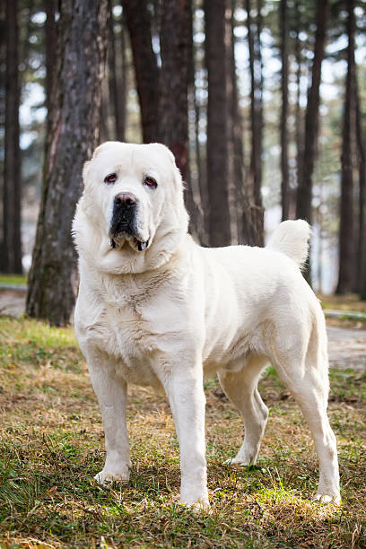
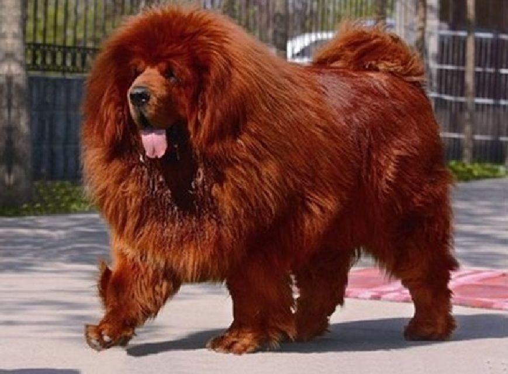
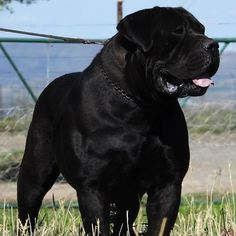
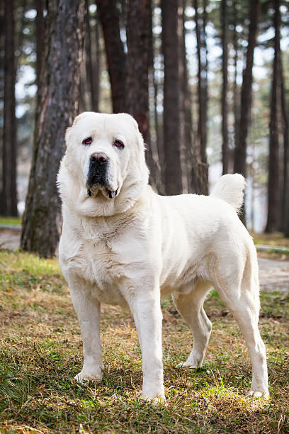
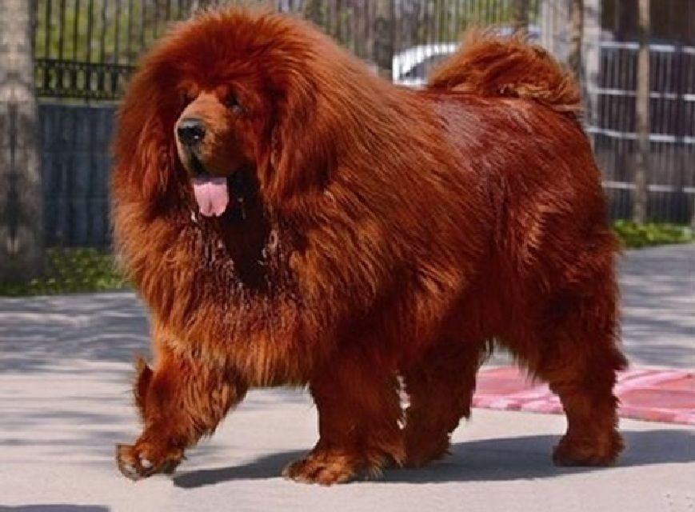
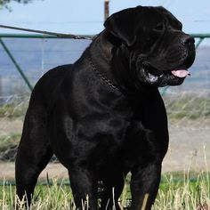

A Cane Corso é uma raça canina molossoide de grande porte do tipo mastim oriunda da região sul da Itália.
É valorizada no país nativo como cão de guarda de fazendas e cão de caça de javalis.
Hoje é um notável cão de companhia.
A Pastor-da-Ásia-Central, Alabai ou Mastim-da-Ásia-Central, é uma raça de cães de guarda do tipo molosso,
originária de países da Ásia central, como o Turcomenistão, tendo a Rússia como país patrono no sistema FCI
O Mastim Tibetano é uma raça de cães molossóide do tipo mastim, que tem origem nos povos nômades do Tibete,
Índia, China e Nepal. Originalmente utilizado como cão guardião de gado.
Hoje é mais popular como cão de companhia e símbolo de status.
O Boerboel é uma raça de cão de grande porte originária da África do Sul.
Esta raça foi criada para ser um cão de trabalho de fazenda, servindo como cão de guarda e boiadeiro.
É uma raça tipo molosso, pesada e com coloração que pode variar entre castanha com uma máscara preta, todo preto, todo castanho e tigrado.
Cão de presa canário ou dogue canário, é uma raça de cães oriunda das ilhas Canárias na Espanha.
É uma raça molossoide de tipo mastim, atualmente reconhecida com dois padrões, por duas organizações distintas,
que atribuem características morfológicas e temperamentais diferentes.
 




